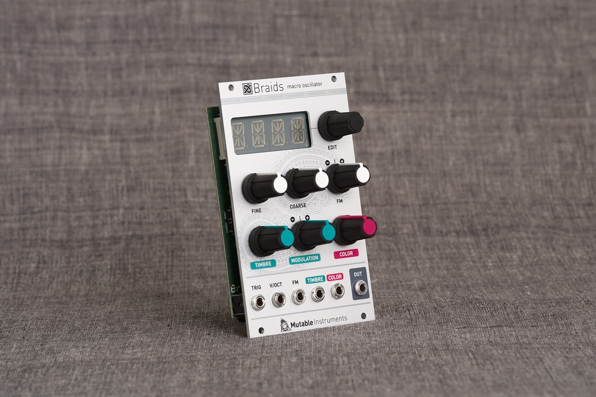
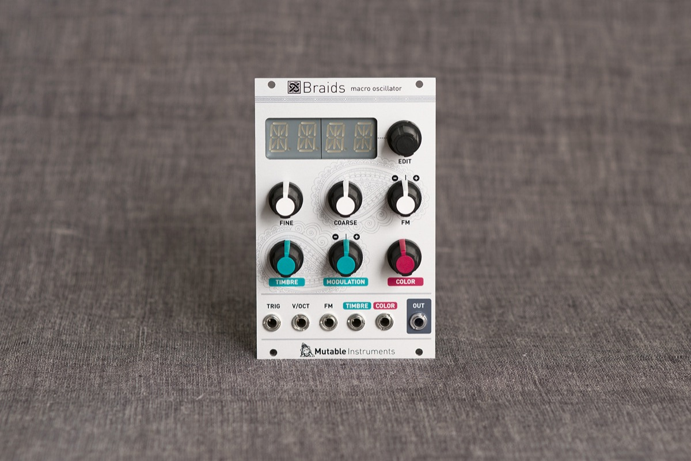

An atlas of waveform generation techniques
Braids is a voltage-controlled monophonic digital sound source.
Sound source... like an oscillator? Not really.
Most of the timbres it generates are so complex that approaching them with a classic analog modular setup would require a full case of oscillators, filters, VCAs, waveshapers and ring-modulators – that's why we call it a macro-oscillator – intricate digital synthesis algorithms wrapped in oscillator's clothes.
2 Knobs to Rule Them All
Each algorithm is controlled by two continuously variable parameters, TIMBRE and COLOR, both of them voltage controllable.
Instead of being directly assigned to the intricate details of the synthesis algorithm, they work as meta-parameters going through all the sweet spots.
Very often, these parameters simultaneously affect several dimensions of timbre, creating very complex movements which would be hard to generate with a traditional setup.
